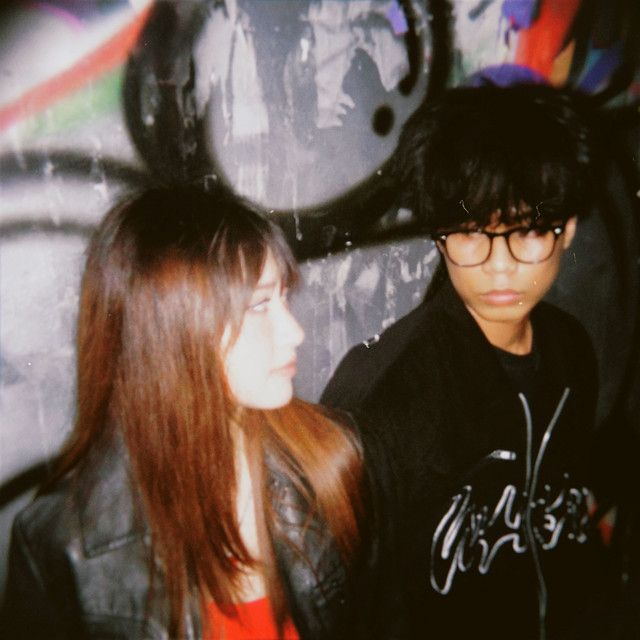
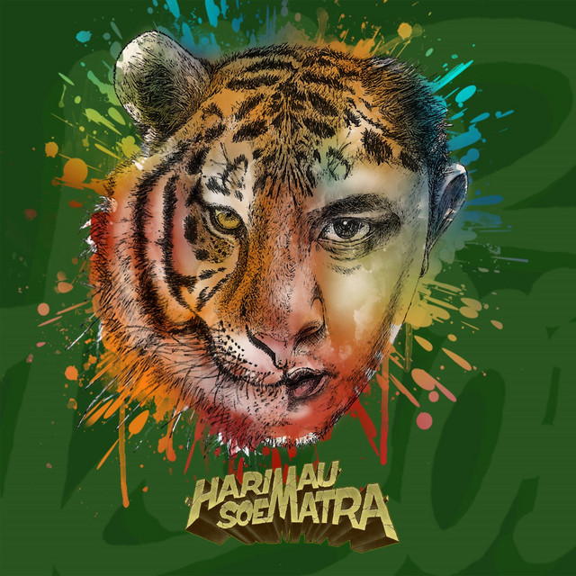

Lose Yourself
Eminem
3:59 • Powerful • HonestCintamu Sepahit Topi Miring
Jogja Hip Hop Foundation
4:21 • Local • Lyrical

Garam & Madu (Sakit Dadaku)
Tenxi, Naykilla & Jemsii
3:05 • Melancholic • Lo-fi RapStronger
Kanye West
5:15 • Energetic • Futuristic

Move
Tuan Tigabelas
3:52 • Flow • VibeHUMBLE.
Kendrick Lamar
3:04 • Intense • Sharp